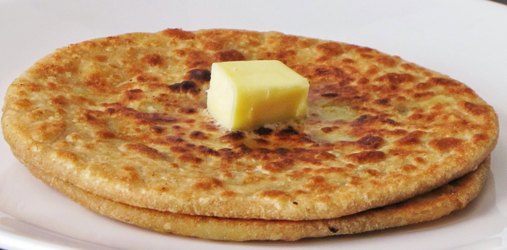

Price 60|| Category: Breakfast
Idli is a type of savoury rice cake popular
as breakfast foods throughout india and
neighbouring countries

Price 90|| Category: Breakfast
Masala dosa or Masale Dose is a variant of the popular
South Indian food, dosa.
It is made from rice, lentils, potato, methi, curry leaves and
served with chutneys and sambar.

Price 15 per parantha|| Category: Breakfast
Aloo ka paratha is one of the healthy Indian recipes.
Boiled Potatoes are stuffed into plain flour dough. Alu paratha is a simple
and delicious breakfast recipe
and best for working employees and children.

Price 120 per plate|| Category: Breakfast
a chicken sausage contains just 7-10 grams of fat and
very little sodium making it healthy to consume. The delectable chicken sausages
as compared to other types of sausages require a notch higher temperature
to cook through completely.